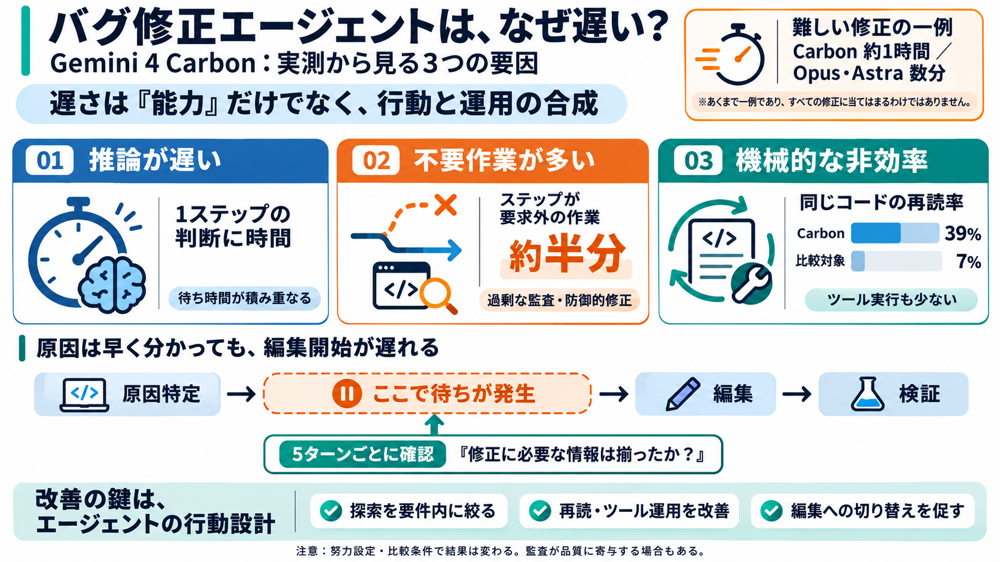

Gemini 4 Carbon: Benchmarks, Pricing & Comparison | Tizora
Carbon is not first everywhere. GPT-6 Astra keeps the lead on FrontierSWE 2 (65.5% to 61.2%), and Claude Opus 5.5 leads …

実測で見る“遅さ”の正体
バグ修正エージェントが遅いのは「頭の良し悪し」だけではなく、推論の遅さ・不要作業・機械的な非効率の合成で説明できる。
Gemini 4 Carbon がバグ修正で Opus / Astra より長くかかることがあるが、根本は能力不足というより“行動の作法”に近い。
「原因は早く名付けられるのに、編集開始が遅い」など、待ち時間が生まれる箇所を分解して示す。
速さ＝モデル能力？
AIエージェントの速度差は、単に推論が速い／遅いだけではなく、余計な手順やツール運用の効率でも大きく変わる。
1ステップあたりの判断・文章生成が遅い。
タスク制約に反しがちな探索・監査・防御的修正が増える。
ツール呼び出しが少ない／同じ箇所を何度も再読する。
high/medium/max の“努力設定”や課金条件で差が見え方変わる。
渋滞の3レーン
遅さは“渋滞”の合成で、(i) 判断が遅いレーン、(ii) 遠回りするレーン、(iii) 信号待ちや再走のレーンが重なる。
ステップごとの待ち時間が伸びると、全体の所要時間が比例して増える。
チケットが要求しない監査・防御が増えると、時間とコストが跳ねる。
ツール呼び出しの不足や再読の多さが、同じ情報を“何度も”扱わせる。
何が起きている？
Kernel.devのバグ修正エージェントのベンチマークで、Carbonは他モデルより1試行あたりの処理時間とコストが大きく跳ねることが観測された。
“バグ修正”は「関連コードを辿って原因特定→修正→検証」しつつ「無関係な変更を避ける」制約が強い。
Carbon は速度・コストが跳ねるだけでなく、何が遅さを作っているかも追跡可能だった。
遅さは三因子
Carbon の遅さは主に三つに分解される：推論が遅い、不要作業が多い、ツール呼び出しと再読のような機械的非効率がある。
Astra 比で16–30%の差、Opus 比では“およそ半分程度”のギャップに相当すると推定。
ステップの約半分が、チケット要求の外（監査・除外済み“穴”の防御など）に使われていた。
ツール呼び出しが少なく、同じコードの再読が 39% 対 7% と高い。
不要作業の衝突
「無関係な変更をしない」制約が強いタスクほど、必要以上の監査や防御的修正は時間増につながりやすい。
症状→原因→修正→検証の間、無関係領域へ踏み込みにくい行動が求められる。
関連コードの“過剰な監査”や、除外された可能性にさらに対処する動きが観測された。
“原因名”は早い
原因の特定（名付け）は比較的早い場合があるが、その後のコード編集開始が大幅に遅れる傾向が示された。
「原因を言語化→編集着手」の間に待ちが生まれやすい。
5ターンごとに「修正に必要な情報は揃ったか？」を自動注入すると完了までの時間が短縮。
遅さが“知識不足”より“行動ポリシー（いつ切り替えるか）の制御”に起因する可能性を補強する。
機械的な非効率
ツール呼び出しの回数が少ないうえ、同じコードを読み直す割合が高いことが遅さを押し上げたと推定されている。
ステップあたりのツール呼び出しが少なく、必要な“外部操作”が遅れやすい。
再読が 39% 対 7% と大きい。情報が更新されないまま読み戻すコストが増える。
能力差でない、合成
Carbon の“約1時間”と Opus / Astra の“数分”の差は、推論の遅さに加え、不要作業と機械的非効率が重なって説明できる。
少なくとも一部（約4分の1程度）の短縮余地が、運用上の改善で生まれる可能性が示唆された。
“速いモデル”ではなく、“行動の切り替え・探索の節度・実行効率”が鍵になる。
改善レバー
ボトルネックは推論そのものだけでなく、ツール利用・再読抑制・“いつ編集に移るか”の制御にある。
1ステップの遅延（思考時間）を縮める（モデル側 or 設計側）。
“監査の深さ”や防御的修正を、チケット要件に沿って制限する。
ツール呼び出し頻度を適正化し、再読（同一コードの読み戻し）を減らす。
5ターンごと等で「編集に必要な情報は揃ったか？」を確認し、フェーズ移行の待ちを圧縮する。
公平性と限界
“努力設定”や比較条件の差は結果に影響し得るため、ベンチをそのまま能力評価として使うのは危険になりうる。
low努力では失敗が増えるため、最適点での比較になっていない可能性がある。
“無駄”に見える監査が、将来の品質（再発防止等）に寄与している場合もある。
それでも“待ちの発生ポイントを具体化し、改善余地を示せる”点が実務価値として残る。
最後に：何を持ち帰る？
Carbon の遅さは「知能の劣り」より、推論の遅さ・不要作業・再読やツール運用の非効率、そして編集への切り替え制御の問題で説明できる。
改善余地は“モデル乗り換え”だけでなく、エージェントの行動設計（Check-in、探索抑制、再読抑制）にある。
ベンチ指標（ステップ数、ツール呼び出し、再読率、編集開始までの遅延）を監視し、ボトルネックを狙って潰す。
Carbon is not first everywhere. GPT-6 Astra keeps the lead on FrontierSWE 2 (65.5% to 61.2%), and Claude Opus 5.5 leads …
Artificial Analysis puts Gemini 4 Carbon at 59 on its Intelligence Index v5, ahead of Claude Opus 5.5 at 58 and GPT-6 As…
Oct 28 Gemini 4 Carbon scores 54 on AA-Omniscience, the highest of any model, 6 points ahead of Claude Opus 5.5 (max,…
Learn via video courses Topics Covered Short answer: on paper, barely. Gemini 4 Carbon is #1 on the Artificial Analysi…
➤ Leading AA-Omniscience v1.1 score, with low hallucination: Gemini 4 Carbon scores 54 on our recently updated AA-Omnisc…